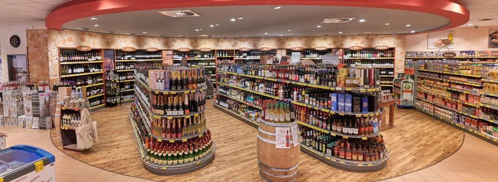
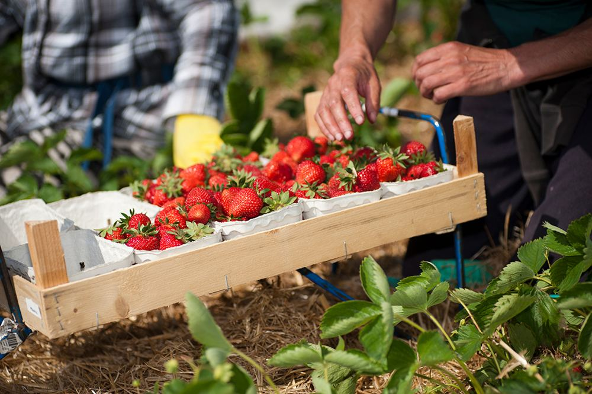

Ihr Markt
Hier finden Sie alles vor Ort.

Nenndorf
Jetzt geöffnet bis 21 Uhr Platzhalterbild
Platzhalterbild
PlatzhalterbildEssen und Trinken in Nenndorf
Die Speisekarten.
Marktgrill und Weinstube haben je eine eigene Karte und eigene Zeiten. Ein Klick, und die Karte liegt offen.

Marktgrill
Döner, Würstchen und Pommes, frisch zum Mitnehmen.

Weinstube
Frühstück, Tortenstücke und eine gute Auswahl an Wein.
Öffnungszeiten
Wann ist wo geöffnet?
Alle Märkte auf einen Blick. Feiertage und Sonderzeiten stehen direkt dabei.
Sonntag einkaufen
Sonntags ist der Kühlschrank leer? Kein Problem.
Alles, was Sie vor dem ersten Besuch im Hybridmarkt Vahrendorf wissen wollen, auf einer Seite.
Aktuell
Angebote der Woche.
Ein Klick führt direkt zu den aktuellen Angeboten bei EDEKA. Sie gelten für alle drei Märkte.

Das E-Paper
Jeden Monat eine neue Ausgabe.
Rezepte, Geschichten aus der Region und Aktionen aus den Märkten, in jeder Ausgabe neu. Ein Klick auf die Titelseite öffnet die aktuelle Ausgabe.
Aus der Region
Gerade frisch von Höfen aus der Nähe.
Wer hat es angebaut, wann kommt es in den Markt, und wie weit ist der Weg? Ein Klick führt zum Hof.



Aktuelles aus den Märkten
Was bei Meyer gerade passiert.
Neue Gesichter, neue Aktionen, Berichte aus den Märkten. Jeder Beitrag bleibt im Archiv.


Schwarzes Brett
Termine aus der Region.
Vereine, Initiativen und Veranstalter aus der Nachbarschaft. Wer einen Termin hat, meldet ihn an, wir stellen ihn ein.
Außerdem bei Meyer.
Häufige Fragen
Gibt es bei Ihnen eigentlich ...?
Die Fragen, die an der Info jeden Tag kommen. Die Markierung zeigt, in welchem Markt es das gibt. So fährt keiner umsonst.
Gibt es Einkaufswagen mit Kindersitz?
Kann ich überall kontaktlos bezahlen?
Gibt es Selbstbezahlkassen, und wie viele?
Wo gebe ich mein Leergut ab?
Wie funktioniert der Einkauf in Vahrendorf?
Kann ich etwas vorbestellen?
Gibt es eine App, und wo lade ich sie herunter?
Habt ihr Bio, Regionales, Glutenfreies oder Veganes?
Was gibt es am Infotresen?
Gibt es frischen Fisch und frisch gerösteten Kaffee?
Kann ich Päckchen abgeben oder abholen?
Kann ich Schuhe reparieren lassen oder eine Handyhülle kaufen?
Kann ich in der Weinstube einen Tisch reservieren?
Wie bestelle ich einen Präsentkorb?
Wie melde ich einen Termin für unseren Verein?
Wen erreiche ich, wenn ich Lob oder Kritik habe?
Im Markt zu Hause
Partner und Infotresen.
Unter einem Dach: Wer bei uns einkauft, erledigt vieles gleich mit.
Präsentkörbe und Geschenke
Schenken, was ankommt.
Körbe mit regionalen Produkten, Wein und Feinkost. Eine Anfrage für alle Märkte, abgeholt wird dort, wo es passt.
FeinkostInstagram zeigt das Heute. Hier steht, was bleibt.
Aktionen, Termine und Vorbestellungen sind hier gebündelt. Wer auf Instagram etwas sieht, findet auf der Seite Details und den Weg zur Bestellung.
 Fisch frisch, heute neu
Fisch frisch, heute neu Frisch geröstetDöner-Woche am GrillWeinverkostung am 20.11.Willkommen, neue Azubis
Frisch geröstetDöner-Woche am GrillWeinverkostung am 20.11.Willkommen, neue AzubisTeam und Karriere
Drei Fragen an ... das Team.
Menschen aus den Märkten in drei Fragen und drei Antworten. Dazu offene Stellen und Ausbildung, gefiltert nach Markt.
MarktleitungKäsetheke